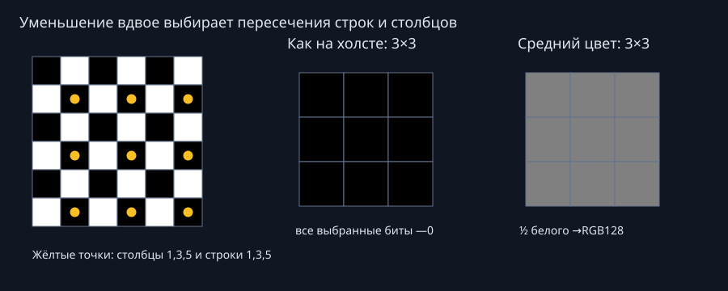
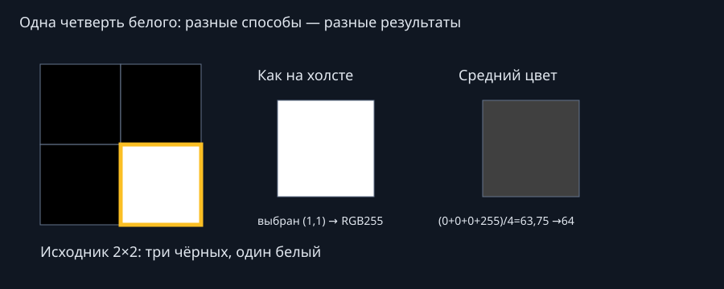
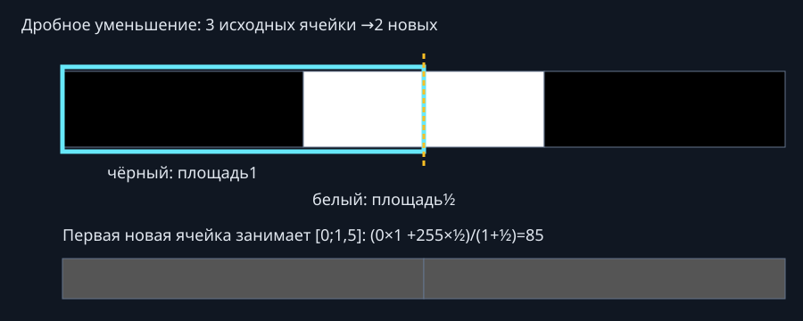

Пиксели, площадь и биты
Как уменьшается битовая картинка
Два действующих способа Маятника: «Как на холсте» и «Средний цвет». Откуда берётся выбранный бит, как считаются дробные площади и почему после уменьшения может исчезнуть симметрия.
1. «Как на холсте» — один пиксель на новую ячейку
В меню название именно «Как на холсте»; это тот способ, который мы обсуждали как «Как на поле». Координаты строк и столбцов начинаются с нуля. Если исходник имеет W×H пикселей, а новая высота h, коэффициент r=h/H. Новая ширина w=ceil(W×r).
sx=floor((x+½)/r) sy=floor((y+½)/r) новый пиксель (x,y) = исходный пиксель (sx,sy)
floor — округление вниз, ceil — вверх. Выбирается пиксель, в который попал центр новой ячейки при обратном переходе к исходной сетке. Остальные исходные пиксели не участвуют.
При уменьшении вдвое: r=½. Столбцы x=0,1,2 превращаются в sx=1,3,5. Со строками происходит то же. Первая новая строка состоит из исходных пикселей (1,1), (3,1), (5,1)…; вторая — (1,3), (3,3), (5,3)…

И при точном делении на2 выборка не обязана сохранять все формы. Например, чётная сетка может иметь геометрическую ось между столбцами, а выбранные столбцы1,3,5… не образуют зеркальных пар. Значения выбранных битов0/1 сохраняются точно; утраченные биты восстановить нельзя.
2. «Средний цвет» — вклад всей площади
В этом способе ширина результата w=round(W×h/H), минимум1. Сначала получаются целые размеры растра. Затем для ячейки (x,y) вычисляется прямоугольник в исходных координатах:
по X: [x×W/w; (x+1)×W/w] по Y: [y×H/h; (y+1)×H/h]
Площадь пересечения с каждым исходным пикселем считается дробно. Вес — произведение ширины и высоты пересечения. Для каждого канала R,G,B отдельно:
цвет = round(Σ(канал исходного пикселя × площадь перекрытия) / Σплощадей)
Округляется итоговый канал цвета до целого0…255. Площади до целых не округляются. Это обычное арифметическое среднее значений RGB, без перехода в линейную световую шкалу.


Числа цвета и значения бита — разные вещи. Средний цвет двух разных битов не превращается автоматически в0 или1. В смешанной ячейке показывается «·», точного бита нет; поиск по0/1 не должен считать её определённым битом. Если исходные биты во всей области одинаковы, это значение сохраняется.
3. Проверь на своей маленькой сетке
Выбери пример, способ и одну новую ячейку справа. Слева показана её область на исходной сетке. Щелчок по исходному пикселю меняет0 на1 и обратно.
Исходная сетка
Результат
| Исходный (x,y) | Бит | Площадь | Канал×площадь |
|---|
В таблице дроби для чтения показаны с ограниченным числом знаков; расчёт использует полные числа. Лаборатория вызывает тот же reduce, что Маятник.
4. Уменьшение данных и масштаб показа
Растр512строк→384строки — это изменение данных. Увеличение на экране ×20 — отдельная операция. В «Под полем» вариант «Высота оригинала» растягивает нижние копии до экранной ширины и высоты оригинала. Вариант «Высота ячейки» сохраняет прежнюю высоту ячейки, поэтому нижние копии с меньшим числом строк становятся ниже. «Истинный размер» фиксирует нижние растры в 1:1: одна ячейка — один физический пиксель, независимо от плотности экрана. Колесо, кнопки масштаба и щипок меняют только оригинал, нижние сохраняют размер и привязку к его оси. «Целое ≥ оригинала» увеличивает истинный размер целым множителем ceil(H/h): например, 512→384 увеличивается ×2 до 768 строк экранных ячеек; 512→256 увеличивается ×2 ровно до высоты оригинала. Это первый целый множитель, достигающий или превышающий высоту оригинала. Если отношение числа исходных строк или столбцов к нижнему растру нецелое, рядом с его информацией выводится красное предупреждение. Например, 512→384 даёт 4/3 исходной строки на нижнюю ячейку; 512→256 даёт ровно 2 строки, но делимость столбцов проверяется отдельно. Растяжение показа не возвращает потерянные детали и не меняет результат выборки.
Нижние построения в Маятнике ограничены минимумом8строк. В этой учебной лаборатории разрешена1строка, чтобы было видно арифметику на2×2 и1×3.
«Ближайший» и «Большинство» сняты из новых наборов по запросу пользователя. Эта методичка описывает два оставшихся способа.